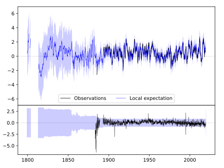
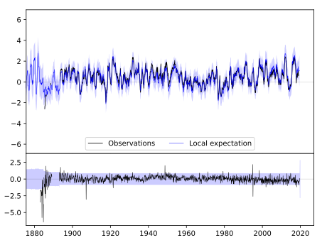
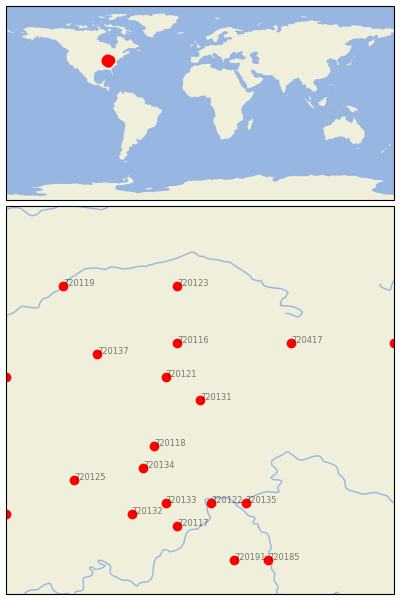

RUSHVILLE [USA]


| Neighbour | Name | Country | Distance | Lon/Lat | Years |
|---|
| 720131 | RUSHVILLE | USA | 0 | -85.5, 39.6 | 1883-2019 |
| 720121 | GREENFIELD | USA | 33 | -85.8, 39.8 | 1893-2019 |
| 720118 | COLUMBUS | USA | 56 | -85.9, 39.2 | 1884-2019 |
| 720116 | ANDERSON SEWAGE PLT | USA | 58 | -85.7, 40.1 | 1893-2019 |
| 720134 | SEYMOUR 2 N | USA | 79 | -86.0, 39.0 | 1887-2019 |
| 720417 | GREENVILLE WTP | USA | 88 | -84.7, 40.1 | 1886-2019 |
| 720137 | WHITESTOWN | USA | 88 | -86.4, 40.0 | 1893-2019 |
| 720122 | MADISON SEWAGE PLT | USA | 100 | -85.4, 38.7 | 1854-2019 |
| 720133 | SCOTTSBURG | USA | 103 | -85.8, 38.7 | 1893-2019 |
| 720135 | VEVAY | USA | 105 | -85.1, 38.7 | 1864-2019 |
| 720123 | MARION 2 N | USA | 112 | -85.7, 40.6 | 1885-2019 |
| 720125 | OOLITIC PURDUE EX FR | USA | 122 | -86.6, 38.9 | 1893-2019 |
| 720132 | SALEM | USA | 122 | -86.1, 38.6 | 1884-2019 |
| 720117 | CHARLESTOWN 5 NNW | USA | 123 | -85.7, 38.5 | 1893-2019 |
| 720129 | ROCKVILLE | USA | 147 | -87.2, 39.8 | 1862-2019 |
| 720119 | DELPHI 2 N | USA | 150 | -86.7, 40.6 | 1893-2019 |
| 720427 | URBANA WWTP | USA | 155 | -83.8, 40.1 | 1854-2019 |
| 720191 | SHELBYVILLE 1 E | USA | 157 | -85.2, 38.2 | 1888-2019 |
| 720185 | FRANKFORT DOWNTOWN | USA | 164 | -84.9, 38.2 | 1893-2019 |
| 720136 | WASHINGTON 1 W | USA | 184 | -87.2, 38.6 | 1893-2019 |